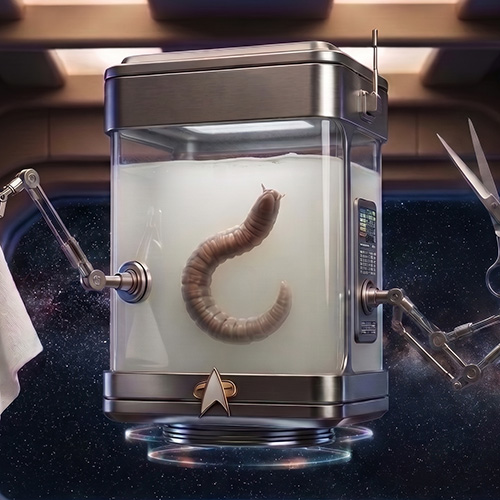

FOTONote
Deambula a bordo di una apposito dispositivo dotato di dispositivo antigrav, pieno di un liquido lattifero bianco in cui è immerso.
Fluttua galleggiando a mezz'aria.
Ai lati del contenitore ci sono due bracci meccanici dotati di pinze alle estremità che reggono rispettivamente un paio di forbici e un asciugamano.
Non parla, ma comunica telepaticamente (con tono spocchioso e marcata 'erre moscia') attraverso un dispositivo elettronico impiantato sul contenitore.
ha frequentato l'Accademia per qualche tempo ma non sopportava nessuno lì.
È telecinetico.
Dà appuntamento a tutti sul Ponte 4, accanto alla pizzeria, dove ha allestito il suo salone.
Le sue prime parole a bordo:
Son qui gvazie ad una nuova linea tempovale: un attimo pvima sono all'Academy insieme ad un gvosso dvago, pvonto a libevave i miei fvatelli simbionti Trill e un attimo dopo voilà, eccomi su questa mevavigliosa astvonave con un impulso ivvefvenabile a tagliav capelli...
Incarichi
- Parrucchiere di Borso – USS Afrodite NCC-1863